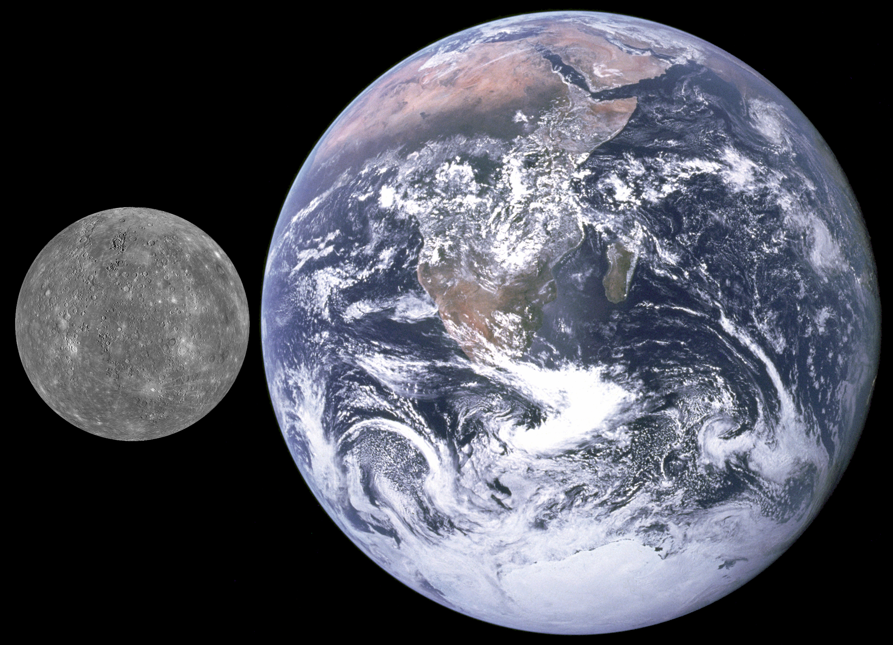

Facts About Mercury
Overview
- Mercury is the closest planet to the Sun
- The Sun would appear three times larger than would appear here on Earth
- There are no moons or rings revolving around Mercury
- One day on Mercury is the equivalent of 59 Earth Days
Size and Distances
- Mercury is 36 million miles or 58 million kilometres to the Sun
- It is the smallest planet in our Solar System at 3030 miles or 4878 km in diameter
- Mercury is 48 million miles (77 million km) at its closest to Earth and 138 million miles (222 million km) at its furthest distance to Earth
- It is a little more than one third the size of Earth


Composition
- Similar to our Moon, Mercury has a rocky and cratered surface
- The Core is mostly made up of Iron and accounts for 75% of Mercury's diameter
- Mercury hasn't got much of an atmosphere due to its low gravity and close proximity to the Sun.
- There are pockets of water ice the craters around the north pole of Mercury where no heat from the sun can reach
Temperature and Atmosphere
- Mercury can reach temperatures of up to 430 degrees celsius in the day
- At nighttime the temperature can plummet to minus 180 degrees celsius due to no atmosphere being able to retain heat
- Mercury has a thin exosphere made up of atoms blasted off the surface by Solar Winds and meteoroids
- The exosphere is made up of oxygen, sodium, hydrogen, helium and potassium